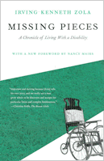

<body bgcolor="#FFFFFF" text="#000000" link="#0000FF" vlink="#CC0000" alink="#CC0000"><center><hr width="350" size="1" align="center" noshade>A reissue of the classic book that gave birth to disability studies<hr width="350" size="1" align="center" noshade><p><a href="https://cdcshoppingcart.uchicago.edu/Cart/ChicagoBook.aspx?ISBN=9781592132447&&PRESS=temple" target="_top">Buy this book!</a> | <a href="https://cdcshoppingcart.uchicago.edu/Cart/Cart.aspx?PRESS=temple" target="_top">View Cart</a> | <a href="https://cdcshoppingcart.uchicago.edu/Cart/Cart.aspx?PRESS=temple" target="_top">Check Out</a></p><p></p></center><!--none//--><h1>Missing Pieces</h1>
<H2>A Chronicle of Living with a Disability</H2>
<H2><!-- With a new Foreword by Nancy Mairs --></H2>
<h3>Irving Kenneth Zola, foreword by Nancy Mairs</h3>
<P>paper 1-59213-244-8 $24.95, Aug 03, <FONT COLOR=#990033>Available</FONT>
<br>Electronic Book 1-43990-677-7 $24.95 <FONT COLOR=#990033></FONT>
<BR> 258 pp
5.8125x9
</P><BLOCKQUOTE><I>"[An] important addition to the growing literature... </i>Missing Pieces<i> is a fascinating and readable 'socioautobiography' that I had difficulty putting down."</i>
<br>&#151<b>Paul J. Corcoran</b>, <i>The New England Journal of Medicine</i><i></I></BLOCKQUOTE>
<p>The personal odyssey of a man with a disability, this passionate book tries to tell as well as analyze what it is like to have a disability in a world that values vigor and health. Zola writes,
<ul><p>"<I>Missing Pieces</I> is an unraveling of a social problem in the manner of <I>Black Like Me</I>. Like its author, I, too, am a trained social observer, but for me 'passing' was not an issue. For I already have the stigmata of the disabled&#151the braces, the limp, the cane&#151though I have spent much of my life denying their existence."</ul>
<p>The author started out in the role of a social scientist on a seven-day excursion to acquaint himself with an extraordinary experiment in living&#151Het Dorp, one of the few places in the world designed to promote "the optimum happiness" of those with severe physical disabilities. Neither a medial center nor a nursing home, Het Dorp is a <I>village</I> in the western-most part of the Netherlands. What began as a sociological attempt to describe this unusual setting became, through the author's growing awareness, what can only be called a socio-autobiography.
<p>Resuming his prior dependence on a wheelchair, the author experienced his own transformation from someone who is "normal" and "valid" to someone who is "invalid." The routine of Het Dorp became his: he lived in an architecturally modified home, visited the workshops, and shared meals, social events, conversation, and perceptions with the remarkably diverse residents.
<p>The author confronts some rarely discussed issues&#151the self-image of a person with a chronic disability, how one fills one's time, how one deals with authority and dependence, and love and sex.
<p><I>Missing Pieces</I> offers striking insights into an aspect of the human condition shared by nearly 30 million Americans. It is must reading for the general reader, as well as for the rehabilitation counselor, social worker, or social scientist.
<BR>&nbsp;<h2>Excerpt</h2><P>Excerpt available at <a href="http://www.temple.edu/tempress">www.temple.edu/tempress</a></p>
<BR>&nbsp;<h2>Reviews</h2>
<p><i>"Full of insights about the experience of disability and chronic illness, it shows us a variety of social and cultural institutions through the eyes of those whom they exclude and deny. Such studies are all too rare in the sociology of health and illness. It tells not only Zola's own story but the story of handicapped people, disabled as much by society as by any fact of body and/or mind. It is a moving, powerful, and profoundly human examination not of "them" but of us all."</i>
<br>&#151<b>Joseph W. Schneider</b>, <i>Contemporary Sociology</i>
<p><I>"Important and moving. We see a man grow whole as he discovers and accepts his particular limits and his complex limitlessness."</I>
<br>&#151<b>Christina Robb</b>, <I>The Boston Globe</I></b>
<p><i>"An absorbing book that will sensitize and enlighten...Zola has paved the way in providing us with a rich, humane, and provocative account of disability in the modern world."</i>
<br>&#151<b>Sol Levine</b>, <i>Qualitative Sociology</i>
<p><i>"Crisp and candid... full of compassion."</i>
<br>&#151<b>David A. Buehler</b>, <i>Library Journal</i>
<p><i>"His account is delivered with humour, honesty, respect, and humility. It offers insights into the world of disability, but really tells the reader as much about the wider society and its difficulty to adjust the word to embrace the needs of disabled people."</i>
<br>&#151<b><i>Disability and Society</i></b>
<p><i>"...a classic."</i>
<br>&#151<b><i>Review of Disability Studies</i></b>
<p><i>"Today's college kids take identity politics and area studies for granted, but they only exist because of people like Zola. His sociological look inside an assisted living facility, first published in 1981, was a foundational text for the study of disability. And its re-release couldn't be more timely: It comes as the idea of politics organized around identity is increasingly considered obscene. Zola's exploration of what it means to live as an embodiment of the body's frailty in a culture that fetishizes perfect health reminds us of identity politics' relevance."</i>
<br>&#151<b><i>City Limits</i></b>
<BR>&nbsp;<h2>Contents</h2><P>
<p>Foreword
<br>Acknowledgments
<p><b>Part I. Before</b>
<br>Prologue: Overcoming Is Only the Start
<br>1. In the Beginning There Was an Idea
<br>2. Several Hours in a Utopia
<p><b>Part II. During</b>
<br>3. So Much in So Short a Time&#151Thursday, May 25
<br>4. The Little Things that Fill a Day&#151Friday, May 26
<br>5. The Greatest Night of the Year&#151Saturday, May 27
<br>6. Confrontations and Conversations with Myself&#151Sunday, May 28
<br>7. On the Problem of Sharing Power and Love&#151Monday, May 29
<br>8. It All Depends on Whether You Stand or Sit&#151Tuesday, May 30
<br>9. Gone but Not Forgotten&#151Wednesday, May 31
<p><b>Part III. After</b>
<br>10. If Listening is Hard, Telling Is Worse: Thoughts on the improbable and Problematic World of the Physically Handicapped and Chronically Ill
<br>11. Four Steps on the Road to Invalidity: The Denial of Sexuality, Anger, Vulnerability, and Potentiality
<br>Epilogue: Some Concluding but Hardly Final Thoughts on Integration, Personal and Social
</P><BR>&nbsp;<H2>About the Author(s)</H2>
<table><tr><td valign="top"><img src="/tempress/authors/246_au1.gif" height="90" width="75"></td><td width="100%" valign="middle"><p><b>Irving Kenneth Zola</b> (1935-1994) was Professor of Sociology at Brandeis University and a founding member and counselor at the Boston Self-Help Center.</P></td></tr></table><P><b>Nancy Mairs</b> is the author of seven books, including <i>Waist-High in the World: A Life Among the Disabled</i>, and most recently, <i>A Troubled Guest: Life and Death Stories</i>. She lives in Tucson with her husband, George.</P>
<BR><H2>Subject Categories</H2>
<p><A HREF="/tempress/disability.html" TARGET="_top">Disability Studies</a>
<BR><A HREF="/tempress/general.html" TARGET="_top">General Interest</a>
<BR><A HREF="/tempress/philosophy.html" TARGET="_top">Philosophy and Ethics</a>
</p>
<p align="center"><a href="https://cdcshoppingcart.uchicago.edu/Cart/ChicagoBook.aspx?ISBN=9781592132447&&PRESS=temple" target="_top">Buy this book!</a> | <a href="https://cdcshoppingcart.uchicago.edu/Cart/Cart.aspx?PRESS=temple" target="_top">View Cart</a> | <a href="https://cdcshoppingcart.uchicago.edu/Cart/Cart.aspx?PRESS=temple" target="_top">Check Out</a></p><p><font face="Arial" size="1"><a href="copyright.html" onMouseOver="window.status='Web Copyright Policy';return true;" onMouseOut="window.status=''" title="Web Copyright Policy">&copy;</a> 2015 <a href="http://www.temple.edu" target="new" onMouseOver="window.status='Link to Temple University home page';return true;" onMouseOut="window.status=''" title="Link to Temple University home page">Temple University</a>. All Rights Reserved. http://www.temple.edu/tempress/titles/246_reg.html</font></p>